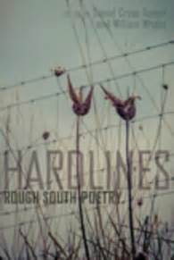

Hard Lines: Rough South Poetry. Daniel Cross Turner and William Wright, editors. Columbia: University of South Carolina Press, 2016.
Editor William Wright introduces this collection of “rough southern poetry,” two hundred poems by sixty contemporary poets, in this way:
As well as its centering on the darker side of southern experience, Dan and I want with this volume to revivify literature-loving audiences with an exposure to poets who have for some decades formed the heart of southern poetry; second we wish to introduce readers to poets perhaps unfamiliar but who we think will become significant facets in southern literature.
Epithets like “hostile spit, grit, grime, and gristle” abound in the editors’ intros. No “nightingales tender as the night” here, no Margaret Mitchell stuff either (as if anyone believed it these days), but a poetry that “keeps things real.” Meaning “serpents, cockfighting, rabid cats.” Jim Dickey’s “Wild to be wreckage forever” seems the mantra for Hard Lines, and a reader may come to feel that the editors insist too much on it. For one thing, it omits a lot of contemporary southern poets and poetry, and a canny reader might make his own list of omissions, as with any anthology.
Dickey is represented by”Canebrake,” “Cherrylog Road,” and the wonderful “The Sheep Child,” which on first appearance in The Atlantic Monthly in August, 1966, brought down a snowstorm of subscription cancellations, but which otherwise could teach a beginning poet a lot about smart ways to skirt questionable taste. Perhaps victims of “the complex world of permissions,” Archie Ammons and Robert Penn Warren are absent, even though Warren’s brilliant Audubon: A Vision, (with only three lynchings) is declared to “brim with gore,” like a poetic slasher movie. Each of the standard list of contemporary southern stars (canny reader necessary here, too) is represented by from one to four poems, as are the lesser-known poets. Traditional forms are represented as well, with sonnets, sonnet-sequences, a villanelle, and ballad stanzas, among others, and these poems often have a narrative basis, proof that the Scotch-Irish and Irish roots of southern story-telling endure.
What isn’t here are poems their authors think you have all day every day to decipher, the Higher Gibberish and non sequiturs that regularly appear in some Big Apple Sunday venues, and the ones that illustrate the dictate to “Make it goofy.” There’s not a lot of the relentlessly clever here either, all of which is to say Hard Lines is very readable.
Characters in these poems sometimes see things which may or may not be there, have wild uncles, whole disfunctional families, and crazy dogs. There are weird businesses like “Wildman’s Civil War Surplus and Herb Shop.” There’s assorted violence, bar fights, lynchings, people vs. animal contests. Sometimes a bit of honest dialect creeps in: “It is with his death I fear my own/ before the loving here gets as open/ as it might could get in such as me?” Or “Like circus posters/ After the show’s done/ Gone.” Fred Chappell’s “The Artful Dodger Out of the Bag” seems to be told by a cat. Animals get skinned, which you rarely find in poems from other parts of America. Same with bootlegging, and despite the fact that many of these poets have graduate degrees in Creative Writing, there’s a lot of physical labor, digging holes, packing crates, fixing truck engines.There’s Linda Parsons Marion’s “Chicken Pickin’ ”and TJ Jarrett’s “There’s a solace in broke-down cars: you can find what/ / is broken. You can make it whole again.” The accusation that poets these days have spent their lives in the classroom would be wasted here.
Strangely, there is not a lot about Hurricane Katrina, given its violence to New Orleans, and I want to register a personal complaint that “Some Enormous Surprises,” a heartbreaker about the childhood of Adolph Hitler, is not included among George Garrett’s poems, though this too may be the result of “the complex world of permissions.”
As for eye-opening discoveries, one is Hastings Hensel’s “Filet,” almost a single sentence that the reader could follow in order to clean a fish:
The thin blade bends
in fish skin
saws along the shoulder,
fins, extends
through belly and breast,
comes clean out
the other side, swept
in air where
the eye has hardened
to a marble . . .
And sixteen lines later, a few quick similes but the poet always on the job, a proof of experience, and that the instruction poem, once fairly common, hasn’t gone out of business:
Then the stray
shards of bone
discarded, the blood--
flecks washed
away from the smooth
grooves of vein.
Or another kind of experience, from Sheryl St. Germain’s “Addiction,” in which shooting up and the sexual are paired by the speaker as “joy/ at any cost”:
Like that I would enter him, slowly, slowly, very still, don’t move, then he would let the fist out, loosen his grip on the upper arm-- and oh, the movement of his lips when he asked that I open my arms. How careful, how good he was, sliding the needle silver and slender so easily into me, as though my skin and veins were made for it, and when he had finished, pulled it out, I would be coming in my fingers, hands, my ear lobes were coming, heart, thighs, tongue, eyes and brain were coming, thick and brilliant as the last thin match against a homeless bitter cold.
Wild to be wreckage forever, indeed. John Lane’s “The Day Andy Griffith Died” takes on the romanticized South directly: “TV shows don’t have/ themes you whistle anymore. No one names a character/ Ernest T. Bass or Opie, Goober, or Gomer.” Lane is perhaps too kind to mention that Aunt Bee, whose character actually became attached to cookbooks, was played by an actress who in real life ended up dying in isolation in North Carolina with fourteen cats and no electricity, a rough south resolution if there ever was one. Mayberry “never existed,/ only lived like a wisp of smoke up somebody’s fake/ chimney.” Lane exposes the cast “bleached white/ like the grits on [his] breakfast table,” that “Andy left Helen Crump/ at the church dance,” and Opie the film director lives seasonally in a condo at Hilton Head. Contemporary southern reality, this poet affirms, is wilder than Gone with the Wind and “Mayberry” when we have Cracker Barrel, Graceland, the Gourd Museum, and a state university whose mascot is an okra wearing boxing gloves.